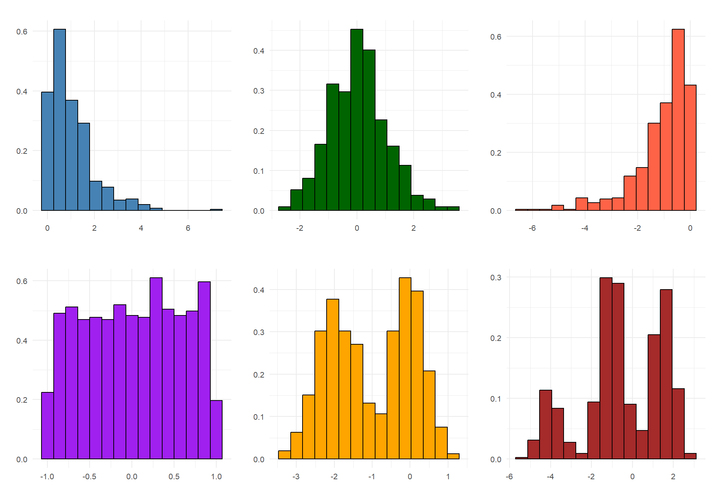
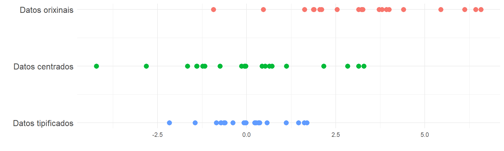
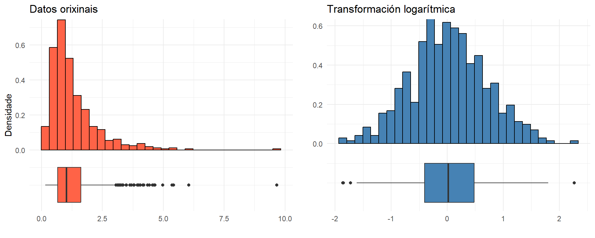
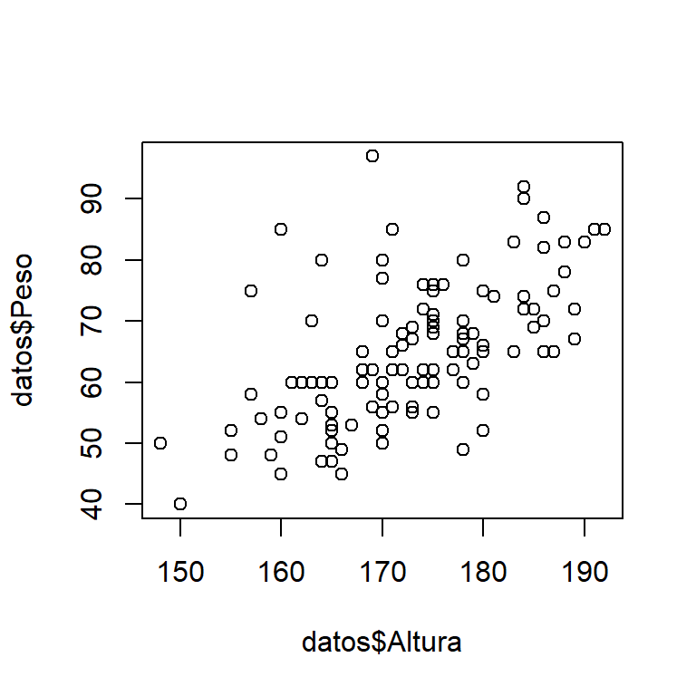

É o universo de individuos ao que se refire o estudo que se pretende realizar.
Variable
Rasgo ou característica dos elementos da poboación que se pretende analizar.
Mostra
Subconxunto da poboación cos valores da variable que se pretende analizar coñecidos.
Estatística
Clasificamos as tarefas vinculadas á Estatística en tres grandes disciplinas:
Estatística descritiva
Ocúpase de recoller, clasificar e resumir a información contida na mostra.
Cálculo de probabilidades
É unha parte da matemática teórica que estuda as leis que rexen os mecanismos aleatorios.
Inferencia estatística
Pretende extraer conclusións para a poboación a partir do resultado observado na mostra.
A Inferencia Estatística ten un obxectivo máis ambicioso que a mera descrición da mostra (Estatística Descritiva).
Dado que a mostra se obtén mediante procedementos aleatorios, o Cálculo de Probabilidades é unha ferramenta esencial da Inferencia Estatística.
Tipos de Variables
Variables cualitativas
Non aparecen en forma numérica, senón como categorías ou atributos.
Cualitativas nominais: grupo sanguíneo (A, B, AB, 0), cor de ollos (azul, verde, marrón, …)
Cualitativas ordinais: a cualificación nunha materia (suspenso, aprobado, notable, sobresaínte)
Variables cuantitativas
Toman valores numéricos.
Cuantitativas discretas: O conxunto de valores posibles é finito ou numerable. Por exemplo, o número de parámetros dun modelo, o número de usuarios dunha aplicación, etc.
Cuantitativas continuas: O conxunto de valores posibles é infinito non numerable. Por exemplo, a estatura, o peso, o tempo de adestramento dun algoritmo, etc.
Recolléronse datos mediante unha enquisa a estudantes, incluíndo información persoal, medidas físicas, e equipo de fútbol favorito.
Grupo
Sexo
Altura
Peso
Zapato
Irmans
Equipo
Grupo B
M
164
47
38
2
RMA
Grupo B
M
157
58
36
2
BAR
Grupo B
M
170
50
41
2
CEL
Grupo B
H
183
65
43
2
RMA
Grupo B
M
175
55
39
3
CEL
Grupo B
H
175
62
43
1
BAR
Grupo B
H
175
60
43
3
RMA
Grupo A
M
161
60
38
1
CEL
Grupo A
M
170
70
40
2
CEL
Grupo A
H
177
62
42
1
BAR
…
…
…
…
…
…
…
Descrición de variables cualitativas e cuantitativas discretas
A primeira forma de recoller e resumir a información contida nunha mostra \(\{x_1, x_2,\ldots, x_n\}\) de tamaño \(n\) dunha variable cualitativas ou cuantitativas discretas é realizar un reconto do número de veces que se observou cada un dos distintos valores que pode tomar a variable.
Descrición de variables cualitativas e cuantitativas discretas
As frecuencias pódense escribir ordenadamente mediante unha táboa de frecuencias, que adopta esta forma:
\(c_i\)
\(n_i\)
\(f_i\)
\(N_i\)
\(F_i\)
\(c_1\)
\(n_1\)
\(f_1\)
\(N_1\)
\(F_1\)
\(c_2\)
\(n_2\)
\(f_2\)
\(N_2\)
\(F_2\)
…
…
…
…
…
\(c_k\)
\(n_k\)
\(f_k\)
\(N_k\)
\(F_k\)
A continuación, recóllense as principais propiedades que cumpren as distintas formas de expresar a frecuencia: absoluta, relativa, acumulada e relativa acumulada.
Propiedade
Frecuencias absolutas
\(0\leq n_i\leq n\)
\(\sum_{i=1}^k n_i = n\)
Frecuencias relativas
\(0\leq f_i\leq 1\)
\(\sum_{i=1}^k f_i = 1\)
Frecuencias absolutas acumuladas
\(0\leq N_i\leq n\)
\(N_k = n\)
Frecuencias relativas acumuladas
\(0\leq F_i\leq 1\)
\(F_k = 1\)
Descrición de variables cualitativas e cuantitativas discretas
Representacións gráficas. Permiten ver de forma visual e clara a información contida na mostra. Existen moitos gráficos axeitados para cada situación, segundo se a variable é cualitativa ou cuantitativa.
Diagrama de barras: Representa frecuencias absolutas ou relativas.
datos <-read.csv2("enquisa.csv")n <-nrow(datos)ni <-table(datos$Irmans)fi <- ni/nbarplot(ni, main ="Diagrama de barras", ylab ="Frecuencia absoluta")barplot(fi, main ="Diagrama de barras", ylab ="Frecuencia relativa")
Descrición de variables cualitativas e cuantitativas discretas
Representacións gráficas. Permiten ver de forma visual e clara a información contida na mostra. Existen moitos gráficos axeitados para cada situación, segundo se a variable é cualitativa ou cuantitativa.
Diagrama de sectores: Obténse dividindo un círculo en tantos sectores como modalidades teña a variable. A amplitude de cada sector debe ser proporcional á frecuencia do valor correspondente.
datos <-read.csv2("enquisa.csv")ni <-table(datos$Irmans)pie(ni)
Descrición de variables cuantitativas continuas
Para construír táboas de frecuencias de variables cuantitativas continuas é habitual agrupar os valores que pode tomar a variable en intervalos. Hai que ter en conta os seguintes aspectos:
Representacións gráficas. Permiten ver de forma visual e clara a información contida na mostra. Existen moitos gráficos axeitados para cada situación, segundo se a variable é cualitativa ou cuantitativa.
Histograma: Mostra a distribución dunha variable cuantitativa continua. A altura de cada barra indica a densidade de frecuencia \(h_i\), que se calcula dividindo a frecuencia relativa do intervalo pola súa lonxitude.
O histograma axuda a describir como é a distribución da variable: se é simétrica (cun eixe de simetría), se ten unha ou varias modas (máximos relativos), etc.

Medidas características: Medidas de posición, de dispersión e de forma
Por medida entendemos un número que se calcula sobre a mostra e que reflicte certa cualidade da mesma.
Parece claro que o cálculo destas medidas require a posibilidade de efectuar operacións cos valores que toma a variable. Por este motivo, no resto do tema tratamos só con variables cuantitativas.
Medidas de posición: son medidas que nos dan información sobre onde están distribuídos os nosos datos.
Media, mediana, moda, cuantís, …
Medidas de dispersión: utilízanse para describir a variabilidade ou dispersión dos datos.
Rango, rango intercuartílico (RI), varianza, desviación típica, coeficiente de variación (CV), …
Medidas de forma: tratan de medir o grao de simetría e apuntamiento nos datos.
Coeficiente de asimetría de Fisher, coeficiente de apuntamento de Fisher, …
Medidas de posición: Media aritmética
Media aritmética
Sexan \(x_1, x_2, \ldots, x_n\) un conxunto de \(n\) observacións da variable \(X\). Defínese a media artimética (ou simplemente media) como: \[
\bar{x} = \frac{x_1 + x_2 + \ldots + x_n}{n} = \frac{1}{n} \sum_{i=1}^{n} x_i
\]
Propiedades:
\(\min(x_i ) \le \bar{x} \le \max(x_i )\)
Exprésase na mesma unidade que os valores da variable.
A media aritmética é o centro de gravidade dos datos, é dicir, \(\sum_{i=1}^n{(x_i - \bar{x})} = 0\).
A media aritmética minimiza a suma das desviacións cadradas: \(\sum_{i=1}^n (x_i - \bar{x})^2 = \mathop {\min}\limits_{a \in \mathbb{R}} \sum_{i=1}^n (x_i - a)^2\).
Se transformamos todos os valores \(x_1,\ldots, x_n\) aplicándolles unha función lineal da forma \(y_i = a + bx_i\), entón a media dos novos valores \(y_1,\ldots, y_n\) obtense aplicando esa mesma transformación á media orixinal, é dicir, \(\bar{y} = a + b\bar{x}\).
Medidas de posición: Media aritmética
Media aritmética
Sexan \(x_1, x_2, \ldots, x_n\) un conxunto de \(n\) observacións da variable \(X\). Defínese a media artimética (ou simplemente media) como: \[
\bar{x} = \frac{x_1 + x_2 + \ldots + x_n}{n} = \frac{1}{n} \sum_{i=1}^{n} x_i
\]
A media ponderada é unha extensión da media aritmética que se usa cando non todos os datos teñen a mesma importancia. En lugar de dar o mesmo “peso” a cada valor, asignámoslle a cada un un peso proporcional á súa relevancia. Así, dado un conxunto de valores \(x_1,x_2,\ldots, x_n\) e os seus pesos correspondentes \(w_1,w_2,\ldots, w_n\) (non negativos), a media ponderada calcúlase como \[\bar {x} = \frac{w_1x_1+w_2x_2+\ldots+w_nx_n}{w_1+w_2+\ldots+w_n} = \frac{\sum_{i = 1}^n {w_ix_i}}{\sum_{i=1}^n{w_i}}.\] A media artimética é un caso particular de media ponderada onde todos os pesos son \(w_i=1/n\), \(i=1,\ldots,n\).
Nos modelos estatísticos e de IA, os pesos teñen un papel importante para controlar a influencia que cada observación ou variable exerce sobre a estimación ou predición final. Moitos modelos dispoñen de mecanismos para asignar pesos, o que permite axustar o impacto dos datos.
Medidas de posición: Mediana
Mediana
Sexan \(x_1, x_2, \ldots, x_n\) un conxunto de \(n\) observacións da variable \(X\).
Unha vez ordenados os datos de menor a maior, defínese a mediana como o valor da variable que deixa á súa esquerda o mesmo número de valores que á dereita.
Propiedades:
A mediana non se ve afectada por valores extremos, ao contrario que a media.
Se \(n\) é impar, a mediana é o valor central ordenando os datos de menor a maior. Se \(n\) é par, a mediana é a media dos dous valores centrais.
Exprésase na mesma unidade que os valores da variable.
Medidas de posición: Mediana
Mediana
Sexan \(x_1, x_2, \ldots, x_n\) un conxunto de \(n\) observacións da variable \(X\).
Unha vez ordenados os datos de menor a maior, defínese a mediana como o valor da variable que deixa á súa esquerda o mesmo número de valores que á dereita.
É o valor da variable que aparece con maior frecuencia.
Ao contrario das outras medidas, a moda tamén se pode calcular para variables cualitativas.
Pero, ao estar tan vinculada á frecuencia, non se pode calcular para variables continuas sen agrupación por intervalos de clase.
Ao intervalo con maior densidade de frecuencia chamámoslle intervalo modal.
Pode ocorrer que haxa unha única moda, no que caso falamos de distribución de frecuencias unimodal.
Se hai máis dunha moda, diremos que a distribución é multimodal.
Medidas de posición: Cuantís
Vimos que a mediana divide os datos en dúas partes iguais. Pero tamén é interesante estudar outros parámetros, chamados cuantís, que dividen os datos da distribución en partes iguais, é dicir, en intervalos que comprenden o mesmo número de valores. Son medidas de posición de tendencia non central.
Cuantís
Sexa \(p \in (0,1)\). Defínese o cuantil \(p\) como o primeiro valor, \(C(p)\), cuxa frecuencia relativa acumulada é maior ou igual que \(p\).
Algúns órdenes dos cuantís teñen nomes específicos. Así:
Os cuartís son os cuantís de orde (0.25, 0.5, 0.75) e represéntanse por \(Q_1, Q_2, Q_3\).
Os decís son os cuantís de orde (0.1, 0.2, …, 0.9).
Os percentís son os cuantís de orde \(j/100\) onde \(j = 1,2,\ldots,99\).
Medidas de posición: Cuantís
Vimos que a mediana divide os datos en dúas partes iguais. Pero tamén é interesante estudar outros parámetros, chamados cuantís, que dividen os datos da distribución en partes iguais, é dicir, en intervalos que comprenden o mesmo número de valores. Son medidas de posición de tendencia non central.
Cuantís
Sexa \(p \in (0,1)\). Defínese o cuantil \(p\) como o primeiro valor, \(C(p)\), cuxa frecuencia relativa acumulada é maior ou igual que \(p\).
Medidas de dispersión: Rango e rango intercuartílico
Rango e rango intercuartílico (RI)
Sexan \(x_1, x_2, \ldots, x_n\) un conxunto de \(n\) observacións da variable \(X\). O rango indica a amplitude total dos datos e defínese como a diferenza entre o valor máximo e o valor mínimo da variable:
\[
R = \max(x_i) - \min(x_i)
\]
O rango intercuartílico (RI) mide a dispersión do 50 % central dos datos. Defínese como a diferenza entre o terceiro e o primeiro cuartil:
\[
RI = Q_3 - Q_1
\]
O RI é unha medida robusta, xa que non se ve afectada por valores extremos ou atípicos.
Medidas de dispersión: Rango e rango intercuartílico
Rango e rango intercuartílico (RI)
Sexan \(x_1, x_2, \ldots, x_n\) un conxunto de \(n\) observacións da variable \(X\). O rango indica a amplitude total dos datos e defínese como a diferenza entre o valor máximo e o valor mínimo da variable:
\[
R = \max(x_i) - \min(x_i)
\]
O rango intercuartílico (RI) mide a dispersión do 50 % central dos datos. Defínese como a diferenza entre o terceiro e o primeiro cuartil:
Se transformamos todos os valores \(x_1,\ldots, x_n\) aplicándolles unha función lineal da forma \(y_i = a + bx_i\), entón a varianza dos novos valores \(y_1,\ldots, y_n\) verifica \(s_{y}^2 = b^2 s_x^2\).
Medidas de dispersión: Varianza
Varianza
Sexan \(x_1, x_2, \ldots, x_n\) un conxunto de \(n\) observacións da variable \(X\). Defínese a varianza como:
Calculamos a varianza das variables cuantitativas do conxunto de datos de exemplo.
Varianzas das variables cuantitativas
Altura
Peso
Zapato
Irmans
82.74
127.52
7.01
0.57
En R, a función var() calcula por defecto a cuasivarianza mostral (divide entre \(n-1\)). Para obter a varianza definida teoricamente neste tema (dividindo entre \(n\)), é preciso facer a corrección que se amosa.
Calculamos a desviación típica das variables cuantitativas do conxunto de datos de exemplo.
Desviación típica das variables cuantitativas
Altura
Peso
Zapato
Irmans
9.1
11.29
2.65
0.75
En R, a función sd() calcula por defecto a cuasidesviación típica mostral (divide entre \(n-1\)). Para obter a desviación típica definida teoricamente neste tema (dividindo entre \(n\)), é preciso facer como se amosa.
Hai situacións nas que necesitamos comparar poboacións cuxa unidade de medida é distinta, ou que, aínda tendo a mesma unidade, difiren nas súas magnitudes.
Coeficiente de variación
\[
CV = \frac{s}{\bar{x}}
\]
Para que se poida definir esta medida, é preciso que a media \(\bar{x}\)non sexa cero.
É unha medida de dispersión adimensional, que non dependa da unidade.
Unha caixa central delimitada polos cuartís \(Q_1\) e \(Q_3\) cunha liña á altura da mediana \(Q_2\).
Os bigotes, que se estenden ata os límites definidos para detectar valores normais, calculados como o menor e maior valor dentro de [\(Q_1-1.5 RI, Q_3+1.5 RI\)].
Valores atípicos (outliers), que se representan como puntos ou símbolos fóra dos bigotes.
Ás veces, antes de aplicar técnicas estatísticas ou modelos de aprendizaxe automática, convén transformar os datos para mellorar o seu comportamento, cumprir os supostos do modelo que se quere aplicar ou facilitar a interpretación.
Dúas das transformacións máis habituais son a tipificación e a transformación de Box-Cox.
Tipificación de datos
A tipificación transforma os valores dunha mostra \(x_1,x_2,\ldots,x_n\) da variable \(X\) para que teñan media 0 e desviación típica 1.
Para cada observación \(x_i\), o valor tipificado \(z_i\) calcúlase como:
\[
z_i = \frac{x_i - \bar{x}}{s}
\]
Esta transformación xera unha nova mostra \(z_1,z_2,\ldots,z_n\), que terá media \(\bar{z}\) igual a 0 e desviación típica \(s_z\) igual a 1, o que permite comparar directamente os valores desta mostra cos doutras mostras tamén tipificadas, sen que a diferenza de escalas afecte á análise.

Transformación de Box-Cox
A transformación de Box-Cox emprégase para converter datos que non seguen unha distribución normal nunha forma máis próxima á normalidade, o que é útil en moitos modelos estatísticos e de aprendizaxe automática.
Para datos positivos, a transformación defínese como:
A elección do parámetro \(\lambda\) faise habitualmente por métodos automáticos.
Esta transformación axuda a reducir a asimetría ou a variabilidade desigual e é especialmente útil cando se traballa con datos de resposta positiva.
Transformación de Box-Cox
A transformación de Box-Cox emprégase para converter datos que non seguen unha distribución normal nunha forma máis próxima á normalidade, o que é útil en moitos modelos estatísticos e de aprendizaxe automática.

Estatística descritiva bidimensional
En moitas ocasións, mídense simultaneamente en cada individuo dunha poboación dúas ou máis variables co propósito de determinar se existen relacións entre elas ou non.
As situacións que se poden presentar neste tipo de estudos son moi variadas, dependendo da natureza das variables analizadas.
Consideraremos unicamente o caso de dúas variables (bidimensional).
Análise de dúas variables cualitativas
Consideramos en primeiro lugar dúas variables cualitativas \(X\) e \(Y\) observadas nunha mostra de tamaño \(n\), representada polos pares ordenados \((x_1,y_1), (x_2,y_2), \ldots, (x_n,y_n)\).
Táboa de frecuencias absolutas (táboa de continxencia)
BAR
CEL
NIN
OTR
RMA
Grupo A
12
16
18
2
18
Grupo B
16
16
9
3
10
Táboa de frecuencias relativas
BAR
CEL
NIN
OTR
RMA
Grupo A
0.100
0.133
0.150
0.017
0.150
Grupo B
0.133
0.133
0.075
0.025
0.083
datos <-read.csv2("enquisa.csv")nij <-table(datos$Grupo, datos$Equipo)n <-sum(nij)n## [1] 120nij## ## BAR CEL NIN OTR RMA## Grupo A 12 16 18 2 18## Grupo B 16 16 9 3 10fij <- nij/nfij## ## BAR CEL NIN OTR RMA## Grupo A 0.10000000 0.13333333 0.15000000 0.01666667 0.15000000## Grupo B 0.13333333 0.13333333 0.07500000 0.02500000 0.08333333
Análise de dúas variables cualitativas
Consideramos en primeiro lugar dúas variables cualitativas \(X\) e \(Y\) observadas nunha mostra de tamaño \(n\), representada polos pares ordenados \((x_1,y_1), (x_2,y_2), \ldots, (x_n,y_n)\).
As frecuencias poden recollerse ordenadamente mediante unha táboa de frecuencias absolutas ou unha táboa de frecuencias relativas, que adoptan esta forma:
\(X \backslash Y\)
\(d_1\)
\(\ldots\)
\(d_j\)
\(\ldots\)
\(d_l\)
\(c_1\)
\(n_{11}\)
\(\ldots\)
\(n_{1j}\)
\(\ldots\)
\(n_{1l}\)
\(\vdots\)
\(\vdots\)
\(\vdots\)
\(\vdots\)
\(c_i\)
\(n_{i1}\)
\(\ldots\)
\(n_{ij}\)
\(\ldots\)
\(n_{il}\)
\(\vdots\)
\(\vdots\)
\(\vdots\)
\(\vdots\)
\(c_k\)
\(n_{k1}\)
\(\ldots\)
\(n_{kj}\)
\(\ldots\)
\(n_{kl}\)
\(X \backslash Y\)
\(d_1\)
\(\ldots\)
\(d_j\)
\(\ldots\)
\(d_l\)
\(c_1\)
\(f_{11}\)
\(\ldots\)
\(f_{1j}\)
\(\ldots\)
\(f_{1l}\)
\(\vdots\)
\(\vdots\)
\(\vdots\)
\(\vdots\)
\(c_i\)
\(f_{i1}\)
\(\ldots\)
\(f_{ij}\)
\(\ldots\)
\(f_{il}\)
\(\vdots\)
\(\vdots\)
\(\vdots\)
\(\vdots\)
\(c_k\)
\(f_{k1}\)
\(\ldots\)
\(f_{kj}\)
\(\ldots\)
\(f_{kl}\)
A continuación, recóllense as principais propiedades que cumpren as frecuencias absolutas e relativas.
Propiedades
Frecuencias absolutas
\(0 \leq n_{ij} \leq n\ \ \ \ \ \)
\(\sum_{i=1}^{k} \sum_{j=1}^{l} n_{ij} = n\)
Frecuencias relativas
\(0 \leq f_{ij} \leq 1\ \ \ \ \ \)
\(\sum_{i=1}^{k} \sum_{j=1}^{l} f_{ij} = 1\)
Análise de dúas variables cualitativas
Tamén podemos calcular os totais por fila e columna (distribucións marxinais)
datos <-read.csv2("enquisa.csv")nij <-table(datos$Grupo, datos$Equipo)n <-sum(nij)n## [1] 120nij## ## BAR CEL NIN OTR RMA## Grupo A 12 16 18 2 18## Grupo B 16 16 9 3 10ni. <-apply(nij, 1, sum)ni.## Grupo A Grupo B ## 66 54n.j <-apply(nij, 2, sum)n.j## BAR CEL NIN OTR RMA ## 28 32 27 5 28
Análise de dúas variables cualitativas
Nunha táboa de frecuencias bidimensional, as frecuencias marxinais son as sumas das frecuencias ao longo das filas ou das columnas. Estas distribucións marxinais permiten coñecer a distribución dunha variable por separado dentro da táboa conxunta.
Podemos organizar as frecuencias conxuntas e as frecuencias marxinais nunha táboa, como se amosa a continuación (poderiamos facer igual coas frecuencias relativas):
\(X \backslash Y\)
\(d_1\)
\(\ldots\)
\(d_j\)
\(\ldots\)
\(d_l\)
Marxinal \(X\)
\(c_1\)
\(n_{11}\)
\(\ldots\)
\(n_{1j}\)
\(\ldots\)
\(n_{1l}\)
\(n_{1 \bullet}\)
\(\vdots\)
\(\vdots\)
\(\vdots\)
\(\vdots\)
\(\vdots\)
\(c_i\)
\(n_{i1}\)
\(\ldots\)
\(n_{ij}\)
\(\ldots\)
\(n_{il}\)
\(n_{i \bullet}\)
\(\vdots\)
\(\vdots\)
\(\vdots\)
\(\vdots\)
\(\vdots\)
\(c_k\)
\(n_{k1}\)
\(\ldots\)
\(n_{kj}\)
\(\ldots\)
\(n_{kl}\)
\(n_{k \bullet}\)
Marxinal \(Y\)
\(n_{ \bullet 1}\)
\(\ldots\)
\(n_{ \bullet j}\)
\(\ldots\)
\(n_{ \bullet l}\)
\(n\)
Análise de dúas variables cuantitativas
Consideramos agora dúas variables cuantitativas \(X\) e \(Y\) observadas nunha mostra de tamaño \(n\), representada polos pares ordenados \((x_1,y_1), (x_2,y_2), \ldots, (x_n,y_n)\).
datos <-read.csv2("enquisa.csv")plot(datos$Altura, datos$Peso)

Análise de dúas variables cuantitativas
Consideramos agora dúas variables cuantitativas \(X\) e \(Y\) observadas nunha mostra de tamaño \(n\), representada polos pares ordenados \((x_1,y_1), (x_2,y_2), \ldots, (x_n,y_n)\).
O diagrama de dispersión. Consiste en representar nunha cuadrícula os pares de observacións \((x_i, y_i)\) de cada individuo da mostra. A nube de puntos que se forma tamén se chama nube de puntos ou scatter plot
Amosa a posible relación entre as dúas variables e detectar patróns lineais ou non lineais.
Se non hai relación, a nube aparecerá dispersa sen patrón definido.
Se hai relación lineal os puntos tenden a agruparse arredor dunha liña ascendente pou descendente.
Se hai relación non lineal a tendencia dos puntos segue unha curva, por exemplo, unha parábola ou un patrón sen liña recta clara.
Permite identificar posibles valores atípicos.
Análise de dúas variables cuantitativas
Covarianza
Sexan \((x_1, y_1), (x_2, y_2), \ldots, (x_n, y_n)\) un conxunto de \(n\) observacións das variables \(X\) e \(Y\). Defínese a covarianza como:
Calculamos a covarianza entre Altura e Peso do conxunto de datos de exemplo.
Covarianza entre Altura e Peso
Sxy
60.42
En R, a función cov() calcula por defecto a covarianza con denominador \(n-1\). Para obter a covarianza definida teoricamente neste tema (dividindo entre \(n\)), é preciso facer a corrección que se amosa.
n <-nrow(datos)cov(datos$Altura, datos$Peso) * (n -1)/n## [1] 60.41736
Análise de dúas variables cuantitativas
Coeficiente de correlación lineal
Sexan \((x_1, y_1), (x_2, y_2), \ldots, (x_n, y_n)\) un conxunto de \(n\) observacións das variables \(X\) e \(Y\). Defínese o coeficiente de correlación lineal como:
\[
r_{xy} =
\frac{s_{xy}}{s_x s_y}
\]
O coeficiente de correlación lineal toma valores en [-1,1] e serve para investigar a relación lineal entre as variables.
Se \(r_{xy}\) é próximo a \(-1\), temos unha relación inversa entre \(X\) e \(Y\), é dicir, cando unha variable toma valores altos, a outra tende a ser baixa.
Se \(r_{xy}\) é próximo a \(+1\), temos unha relación directa, de modo que valores altos dunha variable están asociados con valores altos da outra.
Se \(r_{xy}\) é próximo a cero, non existe relación lineal significativa entre as variables.
Análise de dúas variables cuantitativas
Coeficiente de correlación lineal
Sexan \((x_1, y_1), (x_2, y_2), \ldots, (x_n, y_n)\) un conxunto de \(n\) observacións das variables \(X\) e \(Y\). Defínese o coeficiente de correlación lineal como: